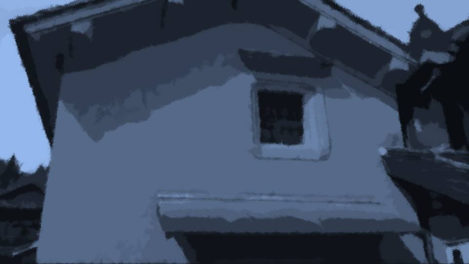
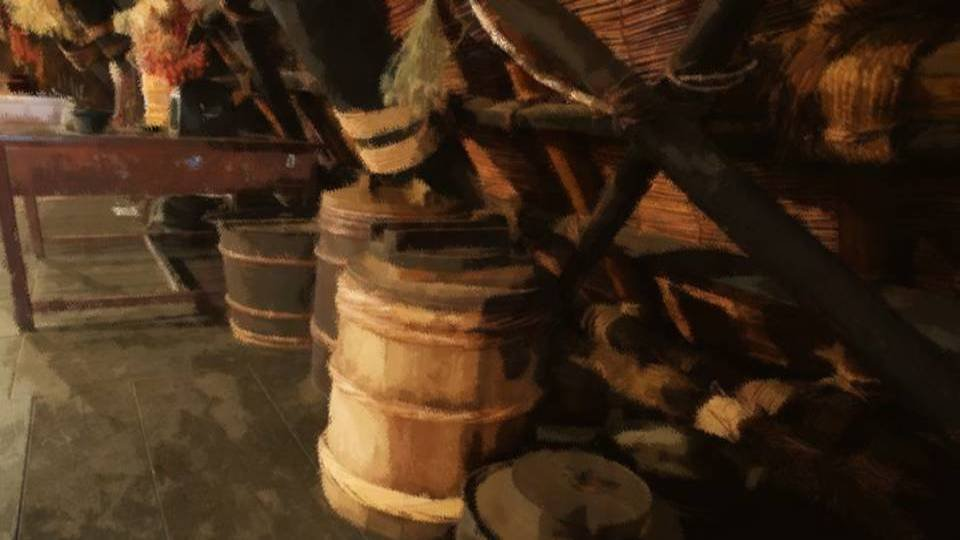
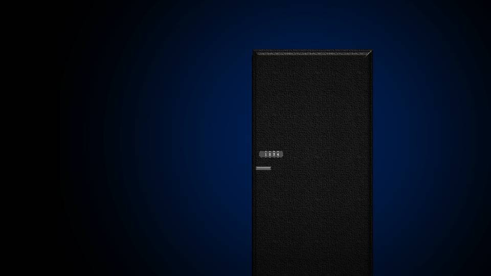
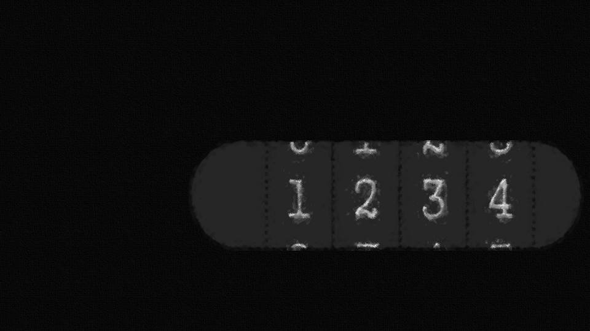
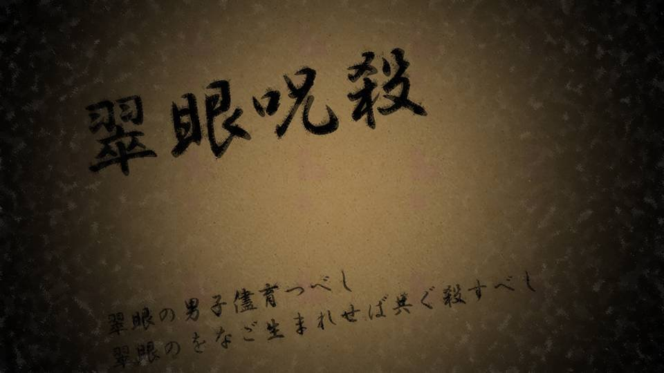
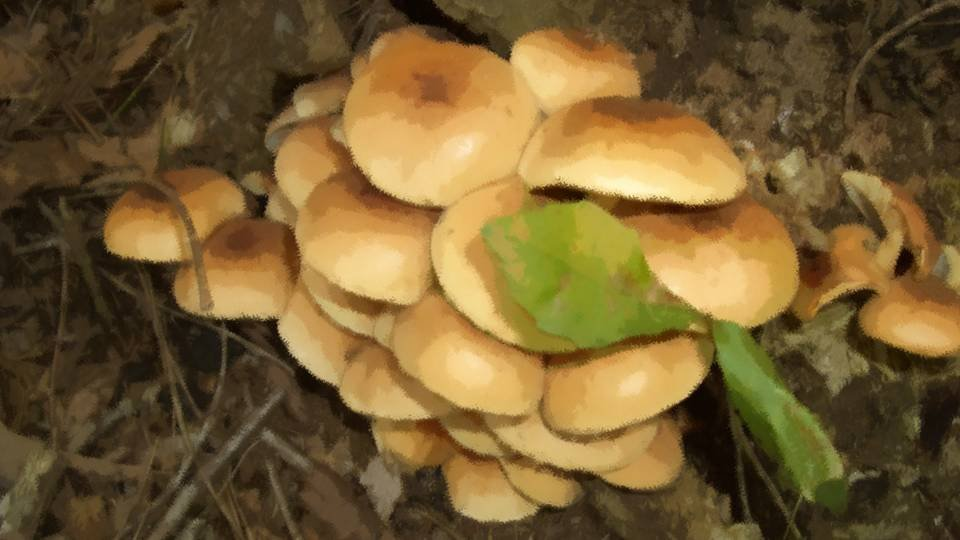

This scene is not unlocked yet in your progress
Moonlight on the Rafters ~Shinigami~


"It's gotten completely dark already...
By the way, Senpai, where's your mom?"
"Mom went out looking for Chiga-nee again too. So before she went, I had her sneak me these."
"Mom went out looking for Chiga-nee again too. So before she went, I had her sneak me these."
In my hand was the bunch of keys.
Grandma and Kotaro-san weren't supposed to find out, so Mom had picked them out for me.
If this leads to solving the curse-killings, I'll call it a necessary evil.
Grandma and Kotaro-san weren't supposed to find out, so Mom had picked them out for me.
If this leads to solving the curse-killings, I'll call it a necessary evil.

"Is there only one storehouse key in there?"
"Probably. Why, what about it?"
"Well, Chiga-nee was holed up in the storehouse with that key, right? So that means after Chiga-nee vanished, the key was found inside the storehouse?"
"Probably. Why, what about it?"
"Well, Chiga-nee was holed up in the storehouse with that key, right? So that means after Chiga-nee vanished, the key was found inside the storehouse?"
"Nobody told me, but given the situation, I guess so.
Someone must've collected it from the storehouse. Something bugging you?"
"Which means Chiga-nee disappeared without the key. If Chiga-nee had left the storehouse on her own, she would have taken the key with her, right?"
"Maybe she was just going to the bathroom or something without locking up? There doesn't seem to be a bathroom in the storehouse, and if she meant to come right back..."
"Which means Chiga-nee disappeared without the key. If Chiga-nee had left the storehouse on her own, she would have taken the key with her, right?"
"Maybe she was just going to the bathroom or something without locking up? There doesn't seem to be a bathroom in the storehouse, and if she meant to come right back..."
"Even so, Chiga-nee must have meant to come back to the storehouse.
And yet she's not in the storehouse, which means she left it against her will.
In other words, there's a good chance she was kidnapped."
"You sure can figure out a lot from one key..."
"You sure can figure out a lot from one key..."
"It's still only a hypothesis, though...
With this case, I can't even guess how far this kind of logic will hold..."
"It's a case you can't solve from a common-sense point of view, after all..."
"It's a case you can't solve from a common-sense point of view, after all..."
I stuck a random key into the keyhole.
I didn't know which key went where, but they were all old.
I didn't know which key went where, but they were all old.
"Okay, it's open. Goto, get the light."
I opened the door, and Goto lit up the inside with her phone's flashlight.
Dusty air came rushing out, and I turned my face away without thinking.
Covering my mouth and nose with my cuff, I squinted inside.
Dusty air came rushing out, and I turned my face away without thinking.
Covering my mouth and nose with my cuff, I squinted inside.
"Nothing seems particularly out of place..."
"You can tell that, when this is your first time seeing the place?"
"No, I was just saying that."
"............"
I groped around for the light switch.
"You can tell that, when this is your first time seeing the place?"
"No, I was just saying that."
"............"
I groped around for the light switch.
"This must be it."

With the lights on, the storehouse turned out to be strewn with nothing but what looked like junk.
Rusted nata and maces, tattered Noh masks and other things unique to Arata, down to ordinary farm tools like hoes.
Rusted nata and maces, tattered Noh masks and other things unique to Arata, down to ordinary farm tools like hoes.
"Senpai, is it okay to turn on the lights? People will find out we're here, won't they?"
"We can just say we were a little curious about what's in the storehouse."
"That's... right..."
Even if high-school girls sneak into a storehouse out of curiosity, the worst they'll get is a little scolding.
If a little scolding is all it costs to search this place, it's no big deal.
"We can just say we were a little curious about what's in the storehouse."
"That's... right..."
Even if high-school girls sneak into a storehouse out of curiosity, the worst they'll get is a little scolding.
If a little scolding is all it costs to search this place, it's no big deal.
"Okay, let's just take a quick look at everything for now. It's not that big a storehouse."
"Do you know the layout of this place?"
"No clue."
I'd known the storehouse was here, but this was my first time inside.
To start the search, I took one step farther in.
The instant I did, Goto grabbed my sleeve tight.
"No clue."
I'd known the storehouse was here, but this was my first time inside.
To start the search, I took one step farther in.
The instant I did, Goto grabbed my sleeve tight.
"Senpai, please don't leave my side..."
"You scared?"
"You scared?"

"Of course I am...! Chiga-nee might have been kidnapped right here!?
And if the culprit turned out to be Necro...!"
Come to think of it, this place could be where she was kidnapped.
Chiga-nee had been reading those books, and I'd been so caught up in them that I'd forgotten what this place might be.
Come to think of it, this place could be where she was kidnapped.
Chiga-nee had been reading those books, and I'd been so caught up in them that I'd forgotten what this place might be.

"It's split into a second floor and a basement."
"Which one should we pick? The most suspicious one is... gotta be the basement."
"Which one should we pick? The most suspicious one is... gotta be the basement."
I headed for the stairs going down to the basement.
Goto squeezed my arm even tighter.
Goto squeezed my arm even tighter.

"What's this supposed to be..."

"It's an electronic lock. This door alone is a lot newer.
It can't have been installed more than 10 years ago."
"So that means Grandma and Kotaro-san know this room's secret. Can't be helped. Let's go to the second floor."
"You're right..."
"So that means Grandma and Kotaro-san know this room's secret. Can't be helped. Let's go to the second floor."
"You're right..."

The second floor didn't have as much junk as downstairs, but there were several dusty desks, with what looked like books piled messily on top.
Chiga-nee had been doing her research up here, then?
Chiga-nee had been doing her research up here, then?

"There are books here, but no bookshelves. The storehouse's books are probably in that room in the basement.

Look, this is the book on the Green-Eye Curse-Killing that Chiga-nee sent me photos of."
"So Chiga-nee brought books up from the basement and went through them in this open space."
"So Chiga-nee brought books up from the basement and went through them in this open space."
Somewhere in these few dozen books, Chiga-nee must have found the truth.
So which book did Chiga-nee look at?
So which book did Chiga-nee look at?
"Okay, Goto, let's find whatever truth Chiga-nee found in here."
"Wait, that's dangerous.
If Chiga-nee really did go missing because she learned the truth, then we're in danger right now too."
"Oh, right... Hm? So that means... Necro is watching us even now...?"
"Oh, right... Hm? So that means... Necro is watching us even now...?"
"If it's an ordinary living thing, then yes, but...
we don't know what form Necro takes or how it's keeping watch on this settlement..."
"It makes Chiga-nee and Natsumi hear voices even from far away, and makes cherry trees grow out of nowhere, after all.
So that means Necro can keep watch from anywhere in the world..."
"No, that doesn't mean it's watching the two of us too. Niimura-senpai, have you ever heard Necro's voice?"
"No, that doesn't mean it's watching the two of us too. Niimura-senpai, have you ever heard Necro's voice?"
"You mean precognition? No way. Of course not..."
"Same here. The conditions for connecting with Necro might be more limited than we think. If only people with precognition are watched by Necro..."
"Same here. The conditions for connecting with Necro might be more limited than we think. If only people with precognition are watched by Necro..."
"So you mean Necro can't tell what the two of us are doing in real time...?"
"To be precise, I think it's through Kogori-senpai and Chiga-nee that Necro communicates. Leaving Kogori-senpai behind may have been the right call. It's also possible Necro can see and hear using Kogori-senpai as a medium."
"To be precise, I think it's through Kogori-senpai and Chiga-nee that Necro communicates. Leaving Kogori-senpai behind may have been the right call. It's also possible Necro can see and hear using Kogori-senpai as a medium."
But anything more would just be piling guesses on top of guesses.
Necro―if we get too scared of it, this time we won't be able to move at all.
Necro―if we get too scared of it, this time we won't be able to move at all.
"Goto, let's search this place after all. While keeping a good eye on our surroundings."
"Understood. Let's keep it as short as we can. We won't go through the contents carefully. We'll just take any suspicious-looking books back to the Niimura house."
"Right."
I picked up a random book and checked the title.
"Understood. Let's keep it as short as we can. We won't go through the contents carefully. We'll just take any suspicious-looking books back to the Niimura house."
"Right."
I picked up a random book and checked the title.
But every one was written in classical Japanese or a foreign language, and I couldn't read them properly.
Chiga-nee had been reading stuff like this?
No wonder it took her so long, and no wonder she needed Goto's help.
Chiga-nee had been reading stuff like this?
No wonder it took her so long, and no wonder she needed Goto's help.
"Hey, Goto, sorry, but I can't read this writing, so you pick."
"Understood. Let's do that."
Goto sat down in a chair with that, flipping through each book before moving on to the next.
Keeping watch on our surroundings, I tidied up the scattered books so Goto could work a little more easily.
"Understood. Let's do that."
Goto sat down in a chair with that, flipping through each book before moving on to the next.
Keeping watch on our surroundings, I tidied up the scattered books so Goto could work a little more easily.

"Goto, wasn't there anything that looked like the truth in the pictures Chiga-nee sent?"
"There was nothing that seemed like the truth to me. Things like ancient infighting in Arata, and the Green-Eye Curse-Killing I mentioned earlier. What she sent me was all stuff in classical Japanese or foreign languages that Chiga-nee couldn't read."
"I see..."
"There was nothing that seemed like the truth to me. Things like ancient infighting in Arata, and the Green-Eye Curse-Killing I mentioned earlier. What she sent me was all stuff in classical Japanese or foreign languages that Chiga-nee couldn't read."
"I see..."
Hm... wait a minute...?
Something about what she just said is off...
Chiga-nee learning the truth is only a guess, but if she did...
Chiga-nee would have had to read that book on her own, right?
Goto's help wasn't needed for her to read it, which means...
Something about what she just said is off...
Chiga-nee learning the truth is only a guess, but if she did...
Chiga-nee would have had to read that book on her own, right?
Goto's help wasn't needed for her to read it, which means...
"Goto, modern Japanese! Look for books in modern Japanese!"
"Modern Japanese...?
"Modern Japanese...?

I see! That's it!"
In that case, even I could look for the book.
Where? Where is it?
Where? Where is it?
"Hm...?"
Out from among the old books came a new scrap of paper.
What was this memo? The handwriting was awful...
This awful handwriting... I recognized it.
This was Chiga-nee's handwriting.
Out from among the old books came a new scrap of paper.
What was this memo? The handwriting was awful...
This awful handwriting... I recognized it.
This was Chiga-nee's handwriting.
Even so, it was messier than usual.
Parts were hard to read, but it wasn't impossible to make out.
Parts were hard to read, but it wasn't impossible to make out.


If you are rea××ng this, it means I have gone mi×××ng, I suppose.
You may think this reads like the opening of a sus××××× drama, but that is exa×××× the situation I am in ri××× now.
I am being wat××××.
From f×× away, and from close by.
No―I think I was being wat×××× even back when I was in To×××.
You may think this reads like the opening of a sus××××× drama, but that is exa×××× the situation I am in ri××× now.
I am being wat××××.
From f×× away, and from close by.
No―I think I was being wat×××× even back when I was in To×××.
"Hey, Goto, this memo...!"
"This is...
............
Chiga-nee's...!"
"Yeah. Chiga-nee knew she herself was in danger...!"
There was more to this memo.
"Yeah. Chiga-nee knew she herself was in danger...!"
There was more to this memo.
There is a reason I am going to the trouble of lea×××× this memo.
I have finally rea×××× the identity of the 'someone' Goto-ch×× spoke of.
It seems 'she' can see eve××××××× through my five sen×××.
But it seems 'she' can××× read my tho×××ts.
I have finally rea×××× the identity of the 'someone' Goto-ch×× spoke of.
It seems 'she' can see eve××××××× through my five sen×××.
But it seems 'she' can××× read my tho×××ts.
Right now I am wri×××× this memo with my eyes turned the other way.
This w××, 'she' cannot see this memo thr×××× me.
I expect it is hard to r×××, but please for×××× that.
This w××, 'she' cannot see this memo thr×××× me.
I expect it is hard to r×××, but please for×××× that.
The name of the 'someone' Goto-ch×× sp××× of is
'Shigatsu Youka.'
It is a giant organism that has been roo××× in this land of Ar××× for tens of thousands of years.
She is apparently clas×××××× as a fungus called the honey fungus, and she grows by plan×××× her spores in other li×××× things.
In other words, Shi×××× Youka is a par×××te.
What looks like cher×× trees is, in fact, her frui×××× body.
It is a giant organism that has been roo××× in this land of Ar××× for tens of thousands of years.
She is apparently clas×××××× as a fungus called the honey fungus, and she grows by plan×××× her spores in other li×××× things.
In other words, Shi×××× Youka is a par×××te.
What looks like cher×× trees is, in fact, her frui×××× body.
Preco×××ion, the curse-killings, M××'s death, my green eyes.
All of these are nothing more than acts of repro××××ion, carried out so that Shi××××× Youka can sur××××.
What a wild org××××× does to reproduce simply lo×××, to us hu××××, like curses and paranormal phenomena. That is all it is.
All of these are nothing more than acts of repro××××ion, carried out so that Shi××××× Youka can sur××××.
What a wild org××××× does to reproduce simply lo×××, to us hu××××, like curses and paranormal phenomena. That is all it is.
Fortunately, she has no intel××××nce.
She has no intelligence, yet she seems to have acq×××××, by some me×××, a way of misle××××× us.
Just in case, I have been reco××××× what hap×××× here on my phone the whole time.
Whoever fi××× this letter, please lis××× to the recording on the phone.
I have not set a pas××××× or a l×××.
She has no intelligence, yet she seems to have acq×××××, by some me×××, a way of misle××××× us.
Just in case, I have been reco××××× what hap×××× here on my phone the whole time.
Whoever fi××× this letter, please lis××× to the recording on the phone.
I have not set a pas××××× or a l×××.
The memo ended there.
Judging by the writing and the context, Chiga-nee seemed to have written down everything she wanted to say.
Some of it was unreadable here and there, but I could follow the gist.
Judging by the writing and the context, Chiga-nee seemed to have written down everything she wanted to say.
Some of it was unreadable here and there, but I could follow the gist.
"Necro's real name is 'Shigatsu Youka.'
Apparently she's a fungus, a honey fungus."
"What's a honey fungus? Some kind of mushroom?"
"That's right.
"What's a honey fungus? Some kind of mushroom?"
"That's right.

The honey fungus is not an especially rare mushroom, and it is commonly used as food as well.
However, the honey fungus family has two major characteristics."
"The first is abnormal giant growth.
Niimura-senpai, do you know what the largest living thing in the world is?"
"I know that much―the blue whale, right? ...is what I'd like to say, but the answer's different, isn't it?"
"I know that much―the blue whale, right? ...is what I'd like to say, but the answer's different, isn't it?"
"The largest living thing confirmed in the world today is a dark honey fungus found in Oregon, in the United States.
The area of its mycelial mat spread underground is about 10 square kilometers―
a square 3.3 kilometers on a side."
"The other trait: it grows by drawing nutrients from the plants around it, killing them as it goes.
This kind of nature is called 'plant-parasitic fungi.'
A plant parasitized by the honey fungus withers with nothing to be done, and it is called a great enemy of forestry.
This is called Armillaria root rot."
"But this honey fungus is a mushroom that grows all over the place, right?
Thinking something like that is Necro, or the root of all this, is kind of a stretch..."
"It might be a special variety that only grows here. What we should focus on is that Chiga-nee was able to get this much information here. Let's look!"
"It might be a special variety that only grows here. What we should focus on is that Chiga-nee was able to get this much information here. Let's look!"
And with that, Goto started checking the books again.
"Hm?"
Goto lifted a book, and a smartphone turned up underneath it.
It was plugged into an outlet and seemed to have been charging the whole time.
This phone had to be Chiga-nee's.
Come to think of it, the memo said she'd been recording what was happening here.
It was plugged into an outlet and seemed to have been charging the whole time.
This phone had to be Chiga-nee's.
Come to think of it, the memo said she'd been recording what was happening here.
"Goto, let's listen to it."
"Then, Senpai, try looking for any audio that seems promising. I'll keep checking the books."
"Right."
"Then, Senpai, try looking for any audio that seems promising. I'll keep checking the books."
"Right."

The phone wasn't locked, and when I turned it on, it opened to a voice-recording app.
But a warning pop-up was showing: 'Not enough storage. Recording stopped.'
With the recording still going, Chiga-nee must have disappeared.
But a warning pop-up was showing: 'Not enough storage. Recording stopped.'
With the recording still going, Chiga-nee must have disappeared.
The recording had stopped this morning―
Chiga-nee's disappearance had come to light about half a day before that.
The recording had started a little after 6 p.m. yesterday.
I'll play it from there.
The recording had started a little after 6 p.m. yesterday.
I'll play it from there.
............
............
Silence?
No, I could hear something rustling.
This was... the sound of writing.
Probably the sound of her writing that memo.
Chiga-nee really had sensed the danger already when she wrote the memo, and had been recording.
No, I could hear something rustling.
This was... the sound of writing.
Probably the sound of her writing that memo.
Chiga-nee really had sensed the danger already when she wrote the memo, and had been recording.
............
............
The sound of writing went on for a while, and after the pen was set down, I heard Chiga-nee sigh.
Then came the rustle of paper being handled, and the soft thumps of books being restacked.
What was she doing...?
The sound of writing went on for a while, and after the pen was set down, I heard Chiga-nee sigh.
Then came the rustle of paper being handled, and the soft thumps of books being restacked.
What was she doing...?
"That sound is her hiding the memo."
"Hiding the memo?"
"Necro―Shigatsu Youka can apparently hijack Chiga-nee's five senses, so she wrote the memo and hid it where her own eyes wouldn't fall on it. She probably put that phone somewhere hard to see too."
"I see. So that's why the handwriting was so awful, and why the memo and the phone were so hard to find."
"Hiding the memo?"
"Necro―Shigatsu Youka can apparently hijack Chiga-nee's five senses, so she wrote the memo and hid it where her own eyes wouldn't fall on it. She probably put that phone somewhere hard to see too."
"I see. So that's why the handwriting was so awful, and why the memo and the phone were so hard to find."
"Who's there!?"
Suddenly, from the phone, came Chiga-nee's shout.
And the sound of a knife being drawn.
Goto stopped what she was doing too, listening intently.
The air grew even more tense.
And the sound of a knife being drawn.
Goto stopped what she was doing too, listening intently.
The air grew even more tense.
And then, footsteps coming up the stairs―
Chiga-nee's breathing could be heard right next to the phone, so they weren't Chiga-nee's footsteps.
Chiga-nee wasn't the only one there. Someone else was coming up the stairs.
Chiga-nee's breathing could be heard right next to the phone, so they weren't Chiga-nee's footsteps.
Chiga-nee wasn't the only one there. Someone else was coming up the stairs.
"Chigaya..."
That voice...!
It clearly wasn't Chiga-nee's, and it wasn't Grandma's or Kotaro-san's or Kana's either.
Who? Whose voice was it?
But... for some reason, it sounded like a voice I'd heard somewhere before.
That voice...!
It clearly wasn't Chiga-nee's, and it wasn't Grandma's or Kotaro-san's or Kana's either.
Who? Whose voice was it?
But... for some reason, it sounded like a voice I'd heard somewhere before.
"Mo... Mom...?"
Chiga-nee's voice, calling someone "Mom."
Chiga-nee calls only one person in this world Mom― no, in the next world too.
Chiga-nee's voice, calling someone "Mom."
Chiga-nee calls only one person in this world Mom― no, in the next world too.
"Mom...! But how...?"
"Chigaya... I'm sorry... Mom's finally made it back."
"Mom... Mom!"
Little by little, the tears crept into Chiga-nee's voice.
"Chigaya... I'm sorry... Mom's finally made it back."
"Mom... Mom!"
Little by little, the tears crept into Chiga-nee's voice.
"Ugh...!"
Then came a small cry from Chiga-nee and a sound like someone being struck.
And the sound of someone, presumably Chiga-nee, falling to the floor.
Then came a small cry from Chiga-nee and a sound like someone being struck.
And the sound of someone, presumably Chiga-nee, falling to the floor.
"Now, Eiichiro, let's carry her."
"Right. Sakura, you take that side."
Two sets of heavy footsteps slowly went down the stairs.
"Right. Sakura, you take that side."
Two sets of heavy footsteps slowly went down the stairs.
What...
What the hell is this...!
Sakura-san and... Dad... Chiga-nee...?
Besides, they've both been dead for at least 10 years, right?
Sakura-san and... Dad... Chiga-nee...?
Besides, they've both been dead for at least 10 years, right?
Something far beyond anything I could have imagined had happened here last night.
The shock of it made me sink down onto the floor.
The shock of it made me sink down onto the floor.
"Senpai, are you okay!?"
Goto crouched down too, bringing her eyes level with mine.
Goto crouched down too, bringing her eyes level with mine.
"Okay...
like I could be...
Why would Sakura-san and Dad, when they're dead..."
"Senpai, calm down. In these curse-killings, what common sense says cannot be is exactly what happens."
"What is this... This is just too crazy... Precognition and weird mushrooms are one thing... but now dead bodies are moving around...?"
"Senpai, calm down. In these curse-killings, what common sense says cannot be is exactly what happens."
"What is this... This is just too crazy... Precognition and weird mushrooms are one thing... but now dead bodies are moving around...?"
At that moment, the Arata settlement's word 'shinigami' came back to me.

The shinigami that return to this world on the anniversary of a death and take away whoever they want to take.
Last night, that very thing had been reenacted, perfectly.
Last night, that very thing had been reenacted, perfectly.